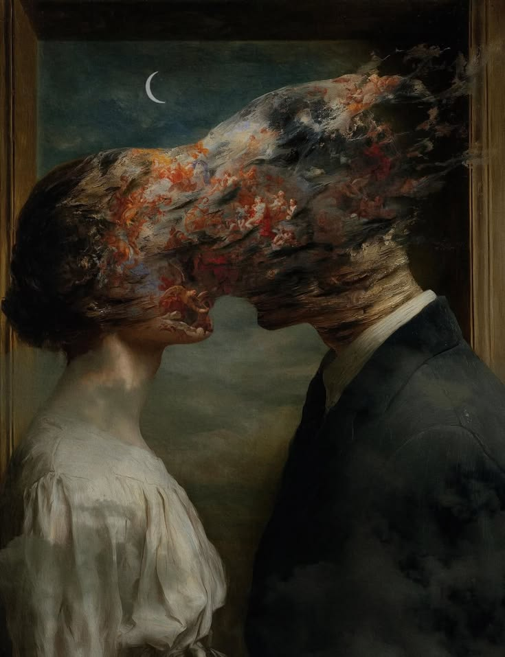

Kita terlalu memuliakan cinta.
Kita menjadikannya alasan untuk hampir segala sesuatu.
Bertahan disebut cinta.
Berkorban disebut cinta.
Cemburu disebut cinta.
Takut kehilangan disebut cinta.
Bahkan terkadang, penderitaan pun dianggap sebagai bukti bahwa seseorang benar-benar mencintai.
Kita tumbuh dengan cerita yang mengajarkan bahwa cinta adalah sesuatu yang harus diperjuangkan sampai akhir.
Bahwa kalau seseorang benar-benar mencintai kita, dia tidak akan pergi.
Bahwa cinta sejati akan selalu menemukan jalan.
Bahwa semakin besar cinta, semakin besar pula pengorbanannya.
Dan entah sejak kapan, kita berhenti mempertanyakan semua itu.
Kita hanya menerimanya sebagai kebenaran.
Tapi bagaimana jika sebagian besar dari apa yang kita sebut cinta sebenarnya hanyalah sesuatu yang kita pelajari untuk disebut cinta?

Kita sering mengatakan:
“Dia cemburu karena dia sayang.”
“Dia melarangku karena dia takut kehilangan.”
“Dia marah karena terlalu peduli.”
Kalimat-kalimat seperti itu terdengar romantis.
Sampai kita membayangkan hal yang sama terjadi tanpa label cinta.
Seseorang mengatur dengan siapa kita boleh berteman.
Seseorang ingin mengetahui setiap tempat yang kita datangi.
Seseorang merasa berhak menentukan apa yang boleh kita lakukan.
Tiba-tiba kita tidak lagi menyebutnya romantis.
Kita menyebutnya kontrol.
Tetapi ketika pelakunya adalah seseorang yang kita cintai, kita sering memberikan nama yang berbeda.
Perhatian.
Mungkin karena kita terlalu terbiasa menganggap cinta sebagai pembenaran.
Kita juga memuliakan pengorbanan.
Film mengajarkan bahwa cinta yang besar adalah cinta yang rela kehilangan segalanya.
Lagu-lagu membuat penderitaan terdengar indah.
Cerita membuat seseorang yang bertahan meskipun terus terluka terlihat seperti pahlawan.
Seolah-olah semakin banyak yang kita korbankan, semakin besar cinta kita.
Tetapi sejak kapan penderitaan menjadi ukuran cinta?
Kalau seseorang harus kehilangan dirinya sendiri agar sebuah hubungan bertahan, apakah itu masih sesuatu yang layak disebut romantis?
Atau kita hanya sedang mengagungkan ketidakmampuan untuk pergi?
Ada pula keyakinan bahwa cinta harus dipertahankan.
“Kalau masih cinta, jangan menyerah.”
Kalimat ini terdengar indah.
Tetapi cinta tidak selalu membuat dua orang cocok.
Dua orang bisa saling mencintai dan tetap saling menyakiti.
Bisa saling memahami tetapi memiliki kehidupan yang berbeda.
Bisa memiliki perasaan yang nyata tetapi tidak memiliki masa depan yang sama.
Dan terkadang, pergi bukan berarti cintanya kurang.
Mungkin justru karena seseorang sadar bahwa cinta saja tidak cukup untuk membuat sebuah hubungan menjadi baik.
Kita terlalu sering menganggap berakhirnya hubungan sebagai bukti bahwa cintanya gagal.
Padahal mungkin sebuah hubungan bisa berakhir tanpa membuat perasaan yang pernah ada menjadi palsu.
Kita juga memiliki obsesi terhadap gagasan “the one.”
Satu orang.
Satu jodoh.
Satu manusia yang katanya ditakdirkan untuk kita.
Dan ketika orang itu pergi, kita merasa seolah-olah kesempatan kita untuk dicintai telah berakhir.
Betapa anehnya.
Dari miliaran manusia di dunia, kita percaya bahwa nilai hidup kita bisa bergantung pada satu orang yang kebetulan kita temui.
Mungkin bukan cinta yang membuat kita berpikir seperti itu.
Mungkin kita hanya ingin percaya bahwa sesuatu yang tidak pasti memiliki kepastian.
Kita ingin percaya bahwa ada seseorang yang memang dibuat untuk kita.
Karena jauh lebih nyaman mempercayai takdir daripada menerima kenyataan bahwa hubungan manusia bisa berakhir kapan saja.
Dan mungkin masalah terbesar dari cara kita memuliakan cinta adalah kita mulai menjadikannya tujuan hidup.
Seolah-olah hidup yang lengkap adalah hidup yang memiliki seseorang.
Seolah-olah kesendirian adalah kekurangan.
Seolah-olah seseorang baru benar-benar berhasil dalam hidup ketika ada orang lain yang memilih untuk tinggal bersamanya.
Kita mengejar pasangan.
Mengejar hubungan.
Mengejar status.
Mengejar perasaan dicintai.
Kemudian kita menyebut semuanya sebagai pencarian cinta.
Padahal mungkin yang kita cari bukan cinta.
Mungkin kita hanya takut sendirian.
Cinta memang bisa menjadi sesuatu yang luar biasa.
Ia bisa membuat kita peduli kepada seseorang yang sebelumnya tidak kita kenal.
Bisa membuat kita rela memberikan waktu.
Bisa membuat kita tumbuh.
Bisa membuat hidup terasa lebih berarti.
Tetapi cinta bukan sesuatu yang secara otomatis membuat semua tindakannya menjadi benar.
Mencintai seseorang tidak membuat kita berhak memiliki mereka.
Mencintai seseorang tidak membuat kita berhak mengontrol mereka.
Mencintai seseorang tidak membuat kita berhak menyakiti mereka.
Dan mencintai seseorang juga tidak berarti kita harus tetap bersama mereka.
Mungkin kita perlu berhenti memberikan cinta kekuasaan sebesar itu.
Karena pada akhirnya, cinta hanyalah salah satu bagian dari kehidupan.
Bukan seluruh kehidupan.
Kita tetap memiliki diri sendiri.
Teman.
Keluarga.
Pekerjaan.
Ambisi.
Kesendirian.
Dan kehidupan yang tetap berjalan bahkan ketika hubungan berakhir.
Seseorang bisa menjadi bagian yang sangat penting dari hidup kita tanpa harus menjadi seluruh alasan mengapa kita hidup.
Mungkin justru ketika kita berhenti menuntut cinta untuk menyelamatkan kita, kita bisa mulai memahami cinta dengan lebih jujur.
Bukan sebagai penyelamat.
Bukan sebagai pembenaran.
Bukan sebagai bukti bahwa kita berharga.
Bukan sebagai sesuatu yang harus selalu dipertahankan.
Tetapi hanya sebagai sesuatu yang terjadi ketika dua manusia memilih untuk berbagi sebagian dari hidup mereka.
Dan seperti semua hal dalam hidup,
ia bisa datang.
Ia bisa berubah.
Dan ia bisa pergi.
Mungkin itu tidak membuat cinta menjadi kurang indah.
Mungkin justru membuatnya lebih manusiawi.
Karena cinta tidak perlu menjadi sesuatu yang sempurna untuk menjadi sesuatu yang nyata.
Kita hanya perlu berhenti memuliakannya sampai lupa mempertanyakannya.
“Mungkin cinta tidak pernah seindah yang kita percayai. Kita hanya terlalu lama memuliakannya.”